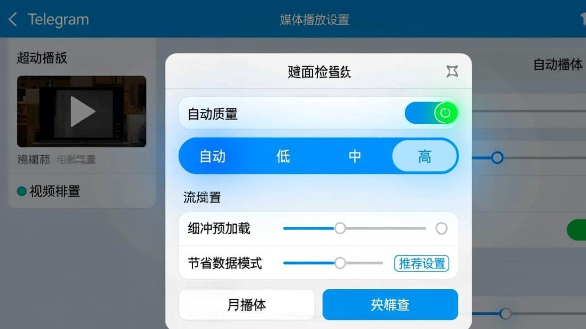
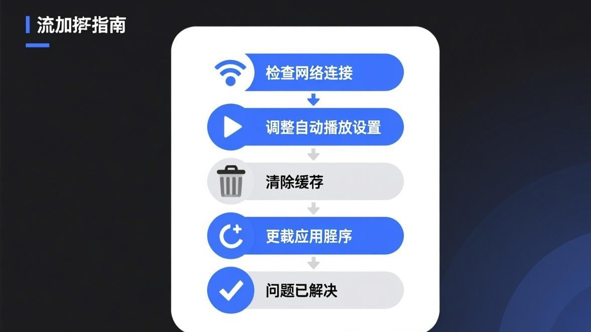

前几天我在一个Telegram群里看到一个挺搞笑的GIF动图，想点开大图看看，结果点了之后就一直显示那个转圈的加载动画，转了快一分钟都没出来。我当时以为是网络问题，就放着等它加载，结果等了五分钟还是那样——转圈。
然后我又试了别的GIF，有些能加载出来，有些就不行。视频也是——有些视频能正常播放，有些点开之后就一直显示在准备（preparing），或者播放的时候卡卡的，画面一顿一顿的。

我当时就觉得很奇怪：图片都能正常加载，怎么GIF和视频就不行了呢？后来我研究了一下才发现，GIF和视频的加载和图片不太一样——它们需要的网络带宽更大，而且对Telegram的服务器连接质量要求更高。
折腾了半天，终于把GIF和视频加载的问题都搞定了。现在我把所有可能的原因和解决方法都写下来，你要是也遇到视频或者GIF加载不出来的情况，对着试一下应该就能搞定。
先说说GIF和视频加载的原理（简单版）
在说解决方法之前，我先简单说一下Telegram里GIF和视频是怎么加载的，这样你就能理解为什么它们比普通图片更容易出问题。

普通图片（JPG、PNG这些）通常不大，几十KB到几MB而已，下载起来很快。但GIF动图就不一样了——一个几秒钟的GIF动图，文件大小可能有几MB甚至十几MB（特别是那种高清的GIF）。视频就更大了，几十秒的视频可能有几十MB。
而且，Telegram对GIF和视频的处理也和图片不一样。图片是下载完再显示的，但GIF和视频支持「流式加载」——就是不用等全部下载完就能开始播放。这个功能很方便，但也更容易出问题：如果你的网络不太稳定，视频播放到一半就可能卡住，因为后面的数据还没下载完。
还有，Telegram的GIF搜索功能（就是那个搜索GIF的按钮）用的是专门的GIF服务器（通常是Giphy或者Tenor），如果你在Telegram里搜索GIF然后发送，那加载GIF的时候还要连这些第三方服务器，又多了一层不确定性。
方法一：先试试最基础的——检查你的网络
这个是最基本但最容易被忽略的。GIF和视频对网络的要求比图片高得多——图片哪怕网络慢一点也能加载出来（就是慢一点而已），但GIF和视频如果网络不好，就会卡住或者加载不出来。
你可以用这个方法简单测试一下你的网络够不够快：在Telegram里发一张图片，看看能不能正常加载；然后再发一个GIF或者一小段视频，看看能不能正常播放。如果图片能加载但GIF/视频不行，那基本就是网络速度不够的问题了。
步骤 1
先试试切换网络：从WiFi换到移动数据，或者反过来
步骤 2
如果你用了网络工具，试试换一个节点（有些节点速度快，适合看视频；有些节点速度慢，只能看看文字）
步骤 3
有个简单的方法测试节点速度：打开YouTube，看看能不能流畅播放1080p的视频。如果YouTube都卡，那这个节点肯定不适合加载Telegram的视频
步骤 4
如果你在家用WiFi，试试离路由器近一点，或者重启一下路由器
步骤 5
还有一个偏方：把手机的「飞行模式」开10秒再关掉，让手机重新搜索网络信号
说个我同事的经验：
我同事说他发现一个规律：在Telegram里看视频，如果用移动数据，通常比WiFi流畅（当然这个要看你的移动网络和WiFi哪个更快）。他说可能是因为有些WiFi会限制视频流量的速度（比如某些公共WiFi），但移动数据一般不会。你可以试试切换一下，看看哪个更快。
方法二：清理Telegram的缓存（GIF特别占缓存）
如果你经常在看GIF或者视频，那Telegram的缓存里可能存了很多GIF和视频的临时文件。这些文件多了之后，不但占存储空间，有时候还会导致GIF和视频加载不正常。
而且GIF特别占缓存——因为一个GIF动图其实就是很多张图片连在一起，文件大小比普通图片大得多。我自己的Telegram缓存里，GIF占的空间比图片还多（当然这可能因为我经常在看GIF）。
清理缓存的方法和清理图片缓存是一样的，我在这里简单说一下步骤。如果你不太清楚怎么清缓存，可以看看Telegram图片一直转圈的解决方法，那篇文章里有详细的步骤。
步骤 1
打开Telegram，点菜单按钮 ->「设置」->「高级」->「存储与数据」
步骤 2
你会看到一个「清除全部缓存」的按钮，点一下
步骤 3
等它清完（你可以看看清掉了多少缓存，如果GIF和视频缓存很多，可能会清掉好几个GB）
步骤 4
完全关闭Telegram（从后台也划掉），然后重新打开
步骤 5
找到之前加载不出来的GIF或者视频，看看能不能正常播放了
一个小技巧：
在「存储与数据」页面里，你会看到各种文件类型占用的缓存空间（图片、视频、音频、文件、GIF等）。你可以看看GIF和视频是不是占了特别多的空间。如果占了特别多（比如超过5GB），那就说明清理缓存确实有必要。我自己的手机上GIF缓存最多的时候有8GB，清完之后Telegram流畅了好多。
方法三：关闭Telegram的「自动播放GIF」功能
Telegram有个功能叫「自动播放GIF」，就是GIF在聊天窗口里会自动播放（不用你点）。这个功能看起来很方便，但实际上特别耗流量和性能——如果你的聊天窗口里有好几个GIF，它们会同时尝试加载和播放，结果就是所有GIF都加载得慢，甚至加载不出来。
我发现自己把「自动播放GIF」关掉之后，GIF加载反而快了——因为不用同时加载那么多GIF了，点哪个加载哪个，反而更稳定。
步骤 1
打开Telegram，进入「设置」->「高级」
步骤 2
找到「自动播放GIF」或者「Autoplay GIFs」这个选项
步骤 3
把开关关掉（关掉之后，GIF会显示成一个静态的预览图，要点一下才会播放）
步骤 4
如果你还想更省流量，可以把「自动播放视频」也关掉
步骤 5
设置完之后，试试看GIF能不能正常加载（点一下GIF就会开始加载和播放）
方法四：iOS用户注意——「低数据模式」和「后台App刷新」
如果你是用iPhone，而且遇到了GIF或者视频加载不出来的问题，那很可能是iOS的「低数据模式」或者「后台App刷新」设置的问题。
「低数据模式」会限制应用的后台数据使用，包括GIF和视频的预加载。如果你开了这个模式，Telegram就没法在后台提前加载GIF和视频，结果就是你点开GIF的时候才开始加载，如果网络不太稳定就会加载失败。
「后台App刷新」如果关了，Telegram就没法在后台预加载媒体文件，也会导致GIF和视频加载慢或者加载不出来。
步骤 1
打开iPhone的「设置」，进入「蜂窝网络」->「蜂窝数据选项」->「低数据模式」
步骤 2
如果「低数据模式」是打开的，关掉它
步骤 3
然后回到设置主界面，进入「通用」->「后台App刷新」
步骤 4
找到Telegram，确保「后台App刷新」是打开的
步骤 5
设置完之后，重启一下Telegram试试
方法五：Android用户注意——「数据节省程序」和「电池优化」
Android用户也有类似iOS「低数据模式」的功能，叫「数据节省程序」或者「流量节省模式」。如果你的Android手机开了这个功能，Telegram的后台数据使用会被限制，结果就是GIF和视频加载不出来。
另外一个Android特有的坑，就是「电池优化」。Android系统为了省电，会限制某些应用在后台的活动。如果Telegram被电池优化限制了，那它在后台就没法预加载GIF和视频，导致你点开的时候加载很慢或者加载不出来。
我弟的手机就遇到过这个问题——他的手机（小米的）有个「电池与性能」的设置，里面把Telegram设成了「省电模式」，结果Telegram在后台基本不活动，GIF和视频都加载不出来。后来我帮他把Telegram改成「无限制」就好了。
步骤 1
打开手机的「设置」，找到「应用管理」或者「电池」设置
步骤 2
找到「电池优化」或者「电池与性能」这个选项
步骤 3
在应用列表里找到Telegram，把它设成「无限制」或者「不优化」
步骤 4
如果你找不到「电池优化」，可以搜一下「[你的手机品牌] 电池优化设置」，不同品牌的界面不太一样
步骤 5
设置完之后，重启Telegram试试
方法六：视频播放卡顿？试试降低视频质量
如果你能加载视频，但播放的时候很卡（画面一顿一顿的，或者声音和画面不同步），那可能是视频质量太高了，你的网络速度跟不上。
Telegram里的视频有两种质量：一种是原始质量（就是发视频的人上传的那个质量），一种是压缩质量（Telegram会自动压缩视频，让文件变小一点）。如果你播的是原始质量的视频，那文件会比较大，对网络要求比较高。
不过Telegram没有直接「降低视频质量」的选项（就是你不点开视频之前，它不会告诉你这个视频是什么质量的）。但你可以试试这个方法：长按视频消息，然后选「以较低质量播放」（如果有的话），或者等视频开始播放之后，点一下视频画面，看看有没有「质量」或者「清晰度」的选项。
我发现的另一个方法：
我发现在Telegram里，如果你把视频「转发」到「已保存的消息」（就是那个Saved Messages），然后再从那里播放，有时候会更流畅。我猜可能是因为转发的时候Telegram会重新处理一下视频文件，或者走不同的服务器节点。不过这个方法不是每次都有用，你可以试试看。
如果所有方法都不行，可能是这些原因
如果你试了上面所有方法，GIF和视频还是加载不出来，那可能是以下几种比较冷门的原因：
第一，Telegram的服务器问题。有时候Telegram的媒体服务器会出问题（特别是某些地区的服务器），导致GIF和视频加载不出来。这种时候你只能等Telegram修好，或者试试换个网络环境（比如换个地区节点）。
第二，你的运营商限制了某些类型的流量。有些运营商会对视频流量做限制（特别是如果你用的是某些便宜的套餐），导致视频加载很慢或者加载不出来。这种时候你可以试试开个飞行模式再关掉，或者换个网络（比如从移动数据换到WiFi）。
第三，Telegram的版本太老了。老版本的Telegram可能对某些新的媒体格式支持不好，导致GIF或者视频加载不出来。你可以去应用商店看看有没有更新，把Telegram更新到最新版。
更多关于媒体加载优化的方法，可以看看媒体加载优化分类里的其他文章。那里有一些提升Telegram整体媒体加载速度的技巧，包括图片、视频、GIF等等。
我总结的几个使用习惯
把我自己的GIF和视频加载问题搞定之后，我养成了几个使用习惯，你可以参考一下：
第一，在看GIF或者视频之前，先确认一下网络比较稳定。如果你在网络不太好的地方（比如电梯里、地下室、或者人多的地方），就别看视频了，等网络好了再看。
第二，把「自动播放GIF」关掉。虽然这样看GIF要多点一下，但能省不少流量，而且GIF加载也会更稳定。
第三，定期清理Telegram的缓存。GIF和视频的缓存特别占空间，而且缓存太多会导致Telegram变慢，各种媒体加载都会变慢。我是每个月清一次，在「设置 -> 高级 -> 存储与数据」里就能清。
第四，如果你经常需要在移动数据环境下看视频，可以考虑把Telegram的「自动下载媒体」设置改一下——只在WiFi环境下自动下载视频，移动数据环境下只自动下载图片。这样能省不少流量，也能避免在网络不好的时候视频加载失败。
第五，如果你发现某个GIF或者视频一直加载不出来，可以试试让发的人重新发一次。有时候是上传的时候出了问题，导致服务器上的文件损坏了，重新发一次就好了。
常见问题
好了，关于Telegram视频和GIF动图加载不出来的问题，我能想到的所有解决方法都写在这里了。GIF和视频的问题通常比图片复杂一点，因为它们对网络的要求更高，而且涉及到更多的设置选项。但只要你按顺序试，基本都能解决。
如果你试了所有方法还是不行，那可能是比较冷门的原因（比如运营商的限制、或者Telegram在你所在地区的服务器问题），这种时候你可以试试换个网络环境，或者等一段时间再试（有时候是Telegram服务器临时出问题，过几个小就恢复了）。
还有，如果你找到了什么新的解决方法，也可以在评论里分享一下。或者你可以回到Telegram图片修复教程首页看看有没有其他相关的内容，说不定能找到新的解决思路。说实话，这种问题每个人的情况可能不太一样，多一个人分享经验，大家解决问题的概率就高一点。
📱 立即下载 Telegram 最新版
更新到最新版本可修复大部分图片加载问题，官方正版安全无捆绑。